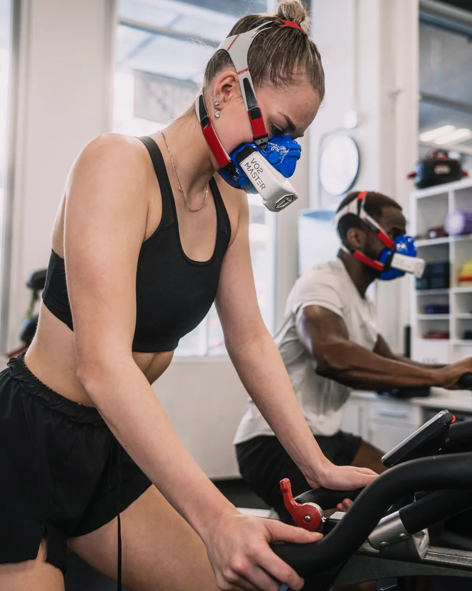
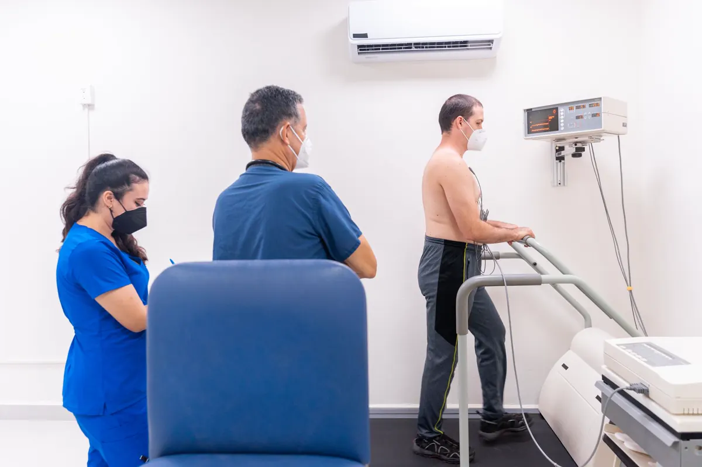

Saúde · Performance · Longevidade
Sua vida, em seu ponto mais alto
Ciência e cuidado conectados para você viver com mais equilíbrio, saúde e propósito.
Cuidado integral.Individual como você.

O seu próximo nível começa com cuidado.
Corpo. Mente. Vida.
- Ciência que orienta
- Cuidado que acolhe
- Tecnologia que conecta
- Você no centro
A essência Vital Apex
Mais escuta. Mais cuidado.
Sua saúde vai além de um sintoma. Nosso olhar também.
Somos uma clínica de saúde integrativa e performance. Conectamos conhecimento médico, nutrição e tecnologia para compreender você por inteiro.
Cada história tem seu ritmo. Por isso, o cuidado começa na escuta e se desenvolve em estratégias que respeitam sua individualidade, seus objetivos e seu momento de vida.
Especialidades que se complementam
Diferentes caminhos. Um mesmo cuidado.
Conhecimento que se encontra. Para cuidar de tudo o que faz você.
-

Medicina do esporte
Saúde e movimento em sintonia. Acompanhamento médico para uma vida mais ativa.
-
Medicina canabinoide
Avaliação individual e orientação médica sobre possibilidades terapêuticas com canabinoides.
-
Nutrição individualizada
Alimentação com ciência e equilíbrio. Estratégias que fazem sentido para sua rotina.
-
Mapeamento corporal
Tecnologia para conhecer sua composição corporal e acompanhar sua evolução.
Um plano de cuidado pode integrar diferentes especialidades, conforme avaliação profissional. Imagens ilustrativas.
Respeitar seu tempo. Valorizar sua jornada.
Da escuta à evolução
Cuidar. Acompanhar. Evoluir.
Um cuidado pensado para caminhar com você, em cada etapa.
Primeiro, conhecer você
Uma escuta atenta à sua história, sua rotina e seus objetivos.
Um plano com sentido
Condutas individualizadas, guiadas por avaliação e evidências científicas.
Evolução acompanhada
Um olhar contínuo para seu progresso e para as necessidades de cada fase.
Performance é viver bem. Longevidade é viver bem por mais tempo.
Esse é o nosso ponto de partida.
Dúvidas frequentes
Antes do primeiro passo.
Informação também é cuidado.
Preciso praticar esporte para ser atendido?
Não. A medicina do esporte também pode apoiar quem deseja começar a se movimentar ou cuidar da saúde. A avaliação considera seu histórico e seus objetivos, seja qual for seu nível de atividade.
Como saber qual especialidade procurar?
O primeiro passo é compartilhar o que você busca com a equipe de atendimento. Ela pode orientar sobre as especialidades disponíveis. A indicação de um tratamento depende de avaliação profissional.
O que é o mapeamento corporal?
É uma avaliação da composição corporal que ajuda a compreender características do seu corpo e acompanhar mudanças ao longo do tempo. O profissional orientará sobre o método e o preparo necessário.
Como funciona a medicina canabinoide?
Começa com uma consulta médica para avaliar seu histórico, necessidades e tratamentos atuais. A indicação de canabinoides, quando adequada, exige acompanhamento e segue as normas vigentes. Não há indicação automática nem garantia de resultado.
O que levar à primeira consulta?
Leve um documento de identificação, exames recentes e a lista de medicamentos e suplementos em uso. Confirme com a equipe se sua avaliação exige algum preparo específico.
Um novo capítulo para sua saúde
Vamos cuidar do seu futuro.
Seu próximo passo começa com uma conversa.
Contatos ilustrativosOs dados abaixo são exemplos e serão substituídos pelos canais oficiais da Vital Apex.
- (00) 00000-0000
- Onde estamos
- Rua Exemplo, 000
Sua cidade · UF - Atendimento
- Horários a confirmar